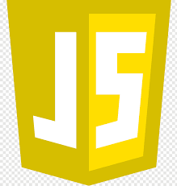

git
- Idéias básicas:
-
Sistema distribuído de controle de versão para rastreamento de alterações no código fonte durante o desenvolvimento de software.
-
Programa executado principalmente através do terminal de comando
-
Diversos comandos, mas apenas alguns são utilizados realmente todo dia (add, commit, push)
-
Site oficial: git --everything-is-local
- git na wikipedia
github

- Idéias básicas:
-
Companhia norte-americana (recém adquirida pela Microsoft inclusive) que provê a hospedagem online de repositórios Git.
- Conceitos mais que básicos:
- Repositório
- Commit
- Branch
- Possibilita publicar os repositório e criar páginas através deles no github pages.
- github na wikipedia
JavaScript
- Idéias básicas:
-
JavaScript é uma linguagem de programação de alto-nível, compilada just-in-time, e multi-paradigma.
-
Outras características próprias:
- curly-bracket syntax
- dynamic typing
- prototype-based object-orientation
- first-class functions
-
Linguagem muito utilizada, possui uma infinidade de frameworks, bibliotecas e está em constante evolução.
-
Criada para atuar no front-end, "do lado do cliente", hoje o JavaScript já está também no back-end com o Node.js.
- javascript na wikipedia
- Agora, um pouco de programação:
-
Hello World!
A praxe de qualquer linguagem é começar com o famoso "Hello World!"
-
Variáveis que variam...
Variáveis são uma parte importante de qualquer linguagem de programação.
Elas servem para armazenar informações, mas nunca esqueça: no fundo, tudo não passa de zeros e uns!